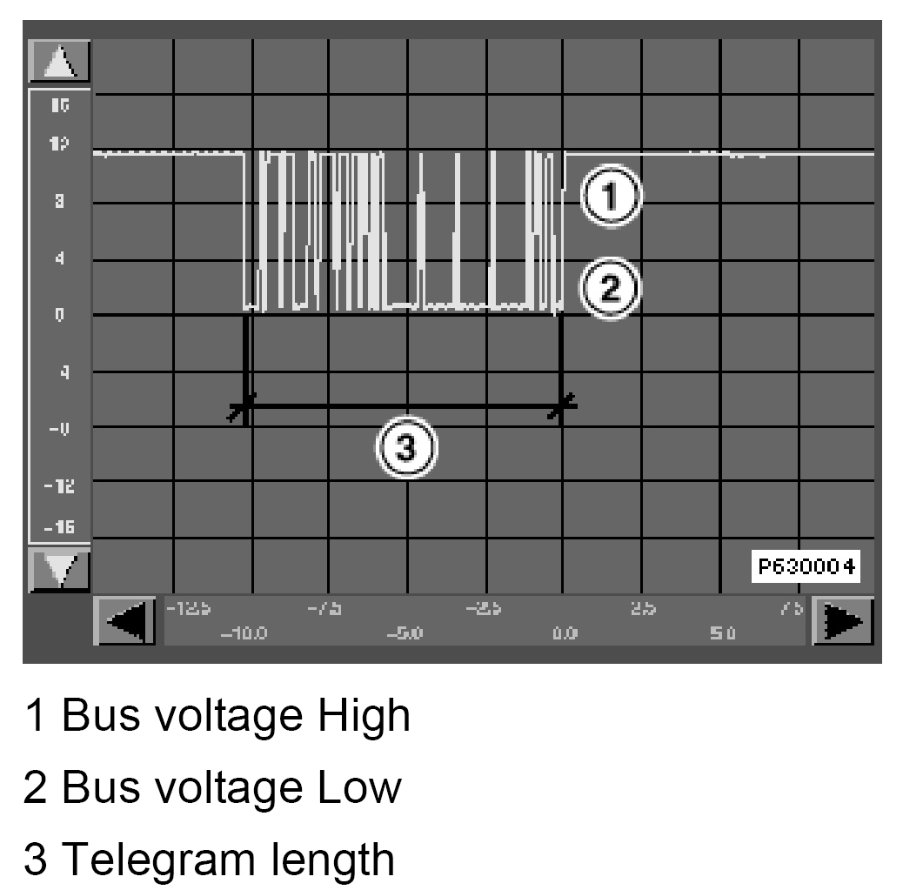

K Bus Line
Bus Test
Test preconditions: Always check that the diagnosis cable and tester are OK before working through the test module. If necessary, the diagnosis procedure should be carried out on another vehicle or the diagnosis cable checked by means of a self-test. The "self test - diagnosis cable" (selection: administration) checks whether the diagnosis cable and the diagnosis interface in the tester are OK. For this purpose, the diagnosis cable must be connected to the test socket at the rear of the tester.
Test procedure: The bus systems (I/K and D-bus) are tested in the test module. The following control modules are addressed as part of this test: DME/DDE, ABS/ASC/DSC, KOMBI (instrument cluster), IHKA/IHKR/IHR, ZKE, RADIO, BM/MID and LCM/LSZ. The identification of the control modules is read out for testing purposes.
If the identification data is transferred without any problems, this indicates that the bus function is OK. If several control modules are not recognized, this indicates that the bus link (connector, lines) or the voltage supply is disconnected. Control module failure and a control module not fitted both indicate the same fault symptom. The control modules checked in the test module are assessed at the end of each test step.
If it is not possible to set up a connection with the vehicle the cause is attributed to an interruption in the data transfer on the D-bus. In this case, carry out troubleshooting on the D-bus line.
Faults can constitute shorts to ground and positive as well as line breaks. In this case, it is not possible to transmit data between the control modules. This also applies to the I/K-bus when no control module was recognized in the test module and no control module could be identified in the short test. In these cases, troubleshooting should be carried out on the bus line.
A momentary recording of the bus voltage is shown in the following figure. This bus voltage is an example and shows the principle progression of a bus telegram.

The fault symptoms have the following characteristics :
- Line break: No voltage on bus line
- Short to positive: No voltage change on bus, the voltage on the bus is U = U(battery)
- Short circuit to ground: No voltage change on bus, the voltage on the bus is U = 0 V
Causes may be:
- Break in line
- Line chafing
- Defective plug connections / contact damage / soiling / corrosion
- Defective control modules
- Defective voltage supply of control modules
- Scorched cables
Use the oscilloscope display and the line test in the preset measurements for the purpose of troubleshooting on the bus line.
Disruptive control modules in bus system
The causes of these faults may be software-related.
One effect of software errors is that the telegrams are disturbed so that functions are not carried out and malfunctions occur.
Notes for determining disruptive control module in bus system:
- Remove the fuses of the control modules connected to the bus one after the other
- Repeat the bus test after each disconnected control module
- If data transfer is OK again after disconnecting a particular control module, then this is the control module that causes the disturbance in data exchange
- Replace the corresponding control module while observing the currently valid Hotline information (HLI) and Service Information (SI).